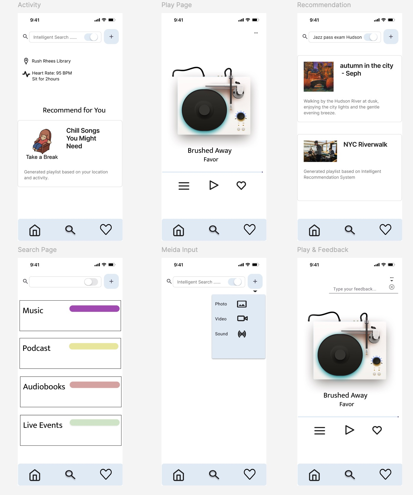
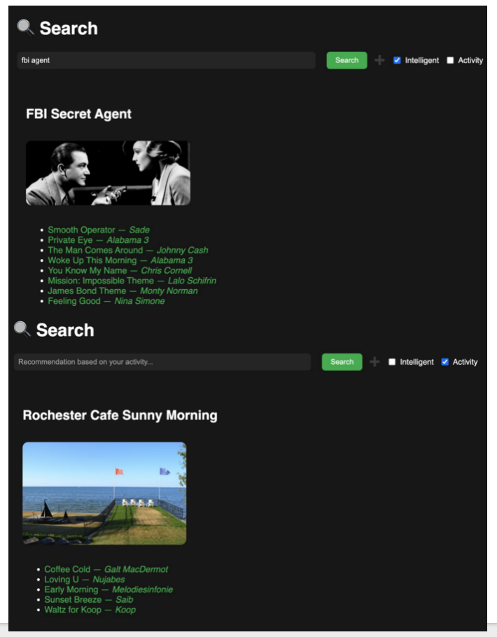
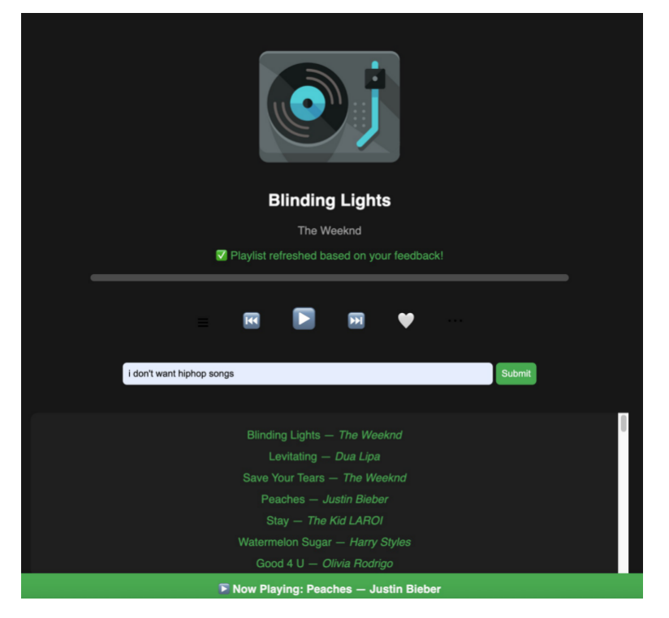

MusFinder: Intelligent Music Recommendation System
Team Member
Haydon Yang
Shouyi Lin
Nancy Choi
Wenxing Wang
Description
MusFinder is an intelligent music recommendation system designed to integrate with
existing music applications, enhancing users' listening experience by providing more
personalized and context-aware music suggestions.
Low-Fidelity and Working Prototype



Demo Video
Highlights of Evaluation Result
Integrated a Large Language Model (LLM) API and built a user-friendly interface compatible with existing regular music applications.
Photo/Keyword Input: 100% task success; Users found it intuitive and matched to mood.
Context-Aware Recommendations: 80% saw appropriate music adjustments based on location.
Real-Time Feedback: 80% reported better recommendations after feedback input.
User Feedback: Praised interface ease and music match quality; suggested faster feedback response.
Behavioral Observations: Users explored freely with minimal guidance; slight hesitation with image uploads.